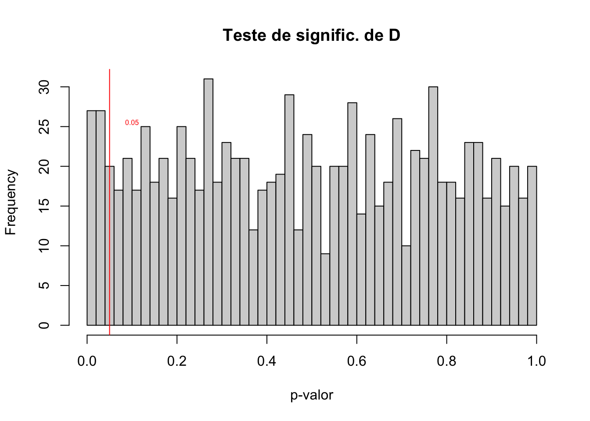
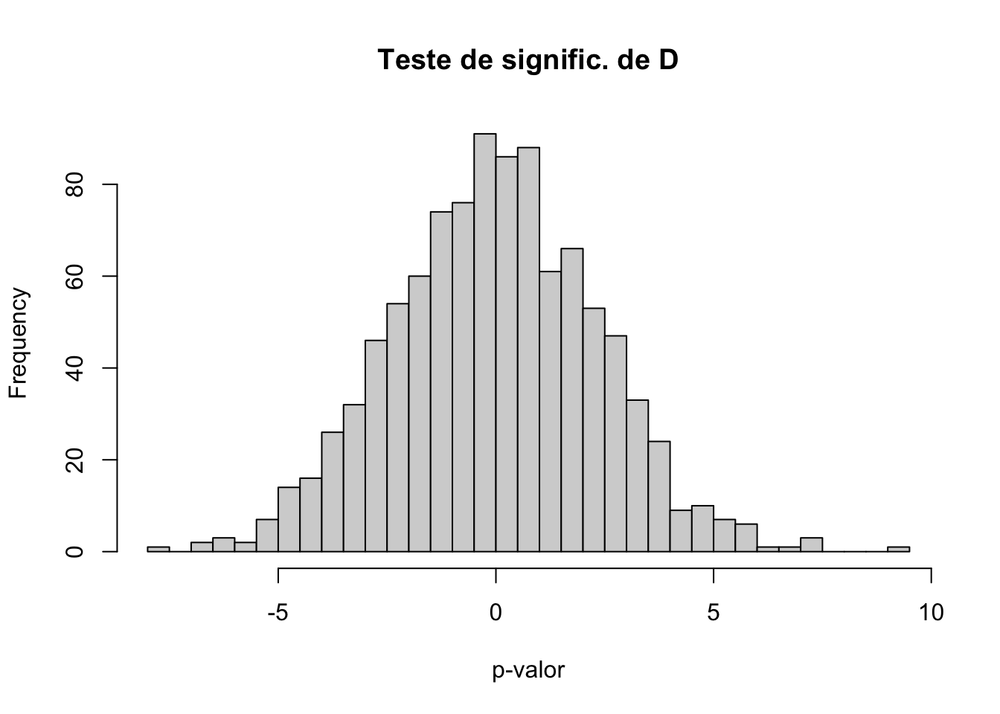
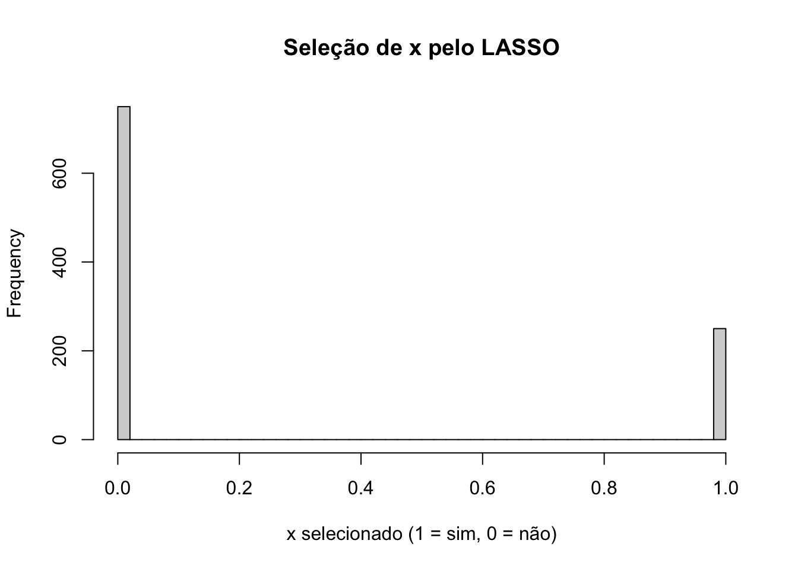
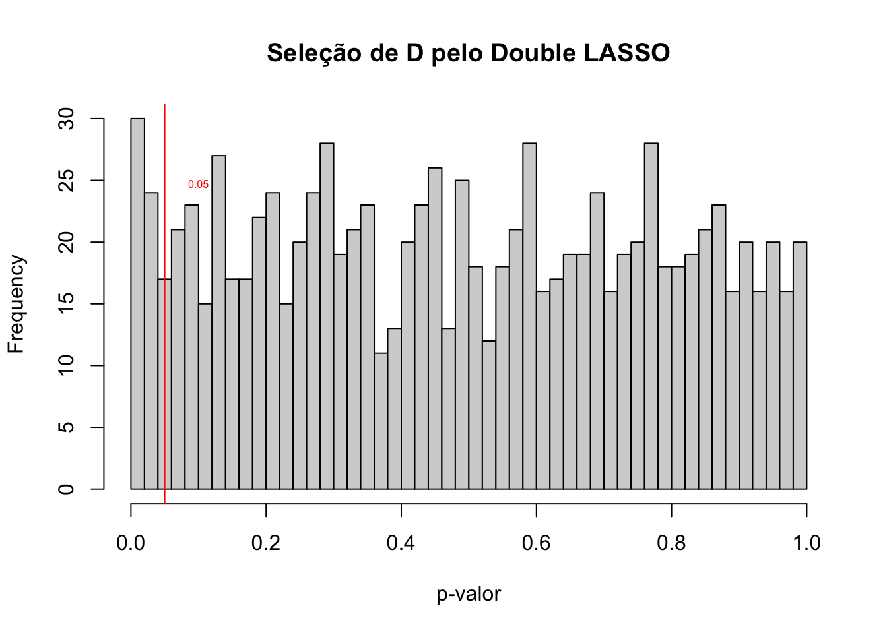

Capítulo 12 Machine Learning
12.1 Introdução
Em estudos observacionais, como vimos, análises baseadas no pressuposto de conditional ignorability do tratamento e positividade permitem a estimação de quantidades causais de interesse. As técnicas de machine learning foram desenvolvidas em geral voltadas para o problema de previsão, não de inferência causal. Por isso, não são normalmente uma alternativa boa para as questões de identificação causal que temos discutido no curso. Contudo, com algumas adaptações, podem ser usadas para análise de causa e efeito.
Uma das abordagens mais populares é a sugerida por Belloni et al. (2014), de usar LASSO (Least Absolute Shrinkage and Selection Operator) para inferir causalidade.
12.2 Terminologia
Estatística Machine Learning
observações
12.2.1 LASSO
O estimador de Mínimos Quadrados Ordinários é obtido minimizando a soma dos quadrados dos resíduos, isto é, em uma regressão \(y_i = \beta_0 + \beta_1 x_{1i} + \beta_2 x_{2i} + \ldots + \beta_p x_{pi} + e_i\), minimizamos \(\sum_{i=1}^n [y_i - (\alpha + \beta_1x_{1i} + \beta_2 x_{2i} + \ldots + \beta_px_{pi})]^2\). Nós podemos pensar essa minimização como uma função de custo. Quanto menor o erro total, menor o custo.
O estimador de LASSO adiciona uma penalidade a essa função de minimização \(\lambda \sum_{j=1}^p |\beta_j|\), ou seja, passamos a minimizar: \(\sum_{i=1}^n [y_i - (\alpha + \beta_1x_{1i} + \beta_2x_{2i} + \ldots + \beta_px_{pi})]^2 + \lambda \sum_{j=1}^p |\beta_j|\)
O termo \(\sum_{j=1}^p |\beta_j|\) é chamado de norma L1. Ele envolve a soma absoluta dos parâmetros. Existem outras normas (L0, L2 etc.), isto é, outras formas de penalizar a estimação dos coeficientes. A norma L1 é conhecida como distância de Manhattan, e a intuição é que, se tenho dois pontos em Manhattan, \((x_1, y_1)\) e \((x_2, y_2)\), que são ruas em esquinas opostas de uma quadra (na diagonal). Como as ruas são, em geral, em formato de grade, temos de andar uma quadra na vertical e outra na horizontal para sair de um ponto a outro. Essa distância é a norma L1. Se usássemos a norma L2, por exemplo, poderíamos ir na diagonal, que é dada pela distância euclidiana.
E \(\lambda\) é um parâmetro não negativo que controla a força da penalização. Veja que coeficientes positivos dos \(\beta\) aumentam o custo total, de modo que eles precisam ser compensados pelo ganho gerado na capacidade preditiva da variável associada (quanto maior a correlação parcial, menor o erro). Assim, ao introduzir essa penalidade, o LASSO estimula que apenas as variáveis com maior capacidade preditiva possuam coeficientes positivos, enquanto as de baixa capacidade preditiva terão coeficiente igual a zero. Nós chamamos isso de esparsidade do vetor de coeficientes, já que muitos deles serão zero. Dizemos também que a regressão foi estimada com regularização. Veja que o LASSO é o equivalente a uma regressão Bayesiana com uma priori nos parâmetros igual a um dupla exponencial, levando à interpretação de que a priori é uma forma de regularizar estimativas.
Quando \(\lambda \to 0\), os coeficientes convergem para os estimadores de MQO, e quando \(\lambda \to \infty\) apenas o intercepto resta. Em ML, o método usual para achar \(\lambda\) é validação cruzada (CV, de cross-validation), que é utilizada para favorecer previsões fora da amostra. Belloni et al. (2012) advogam uma escolha baseada em teoria, também conhecido como LASSO rigoroso. Angrist & Frandsen (2022) concluíram que essa abordagem rigorosa tende a favorecer modelos mais parsimoniosos (\(\lambda\) maiores) do que com CV.
12.2.2 Double Lasso
O estimador robusto mais popular é o Double Lasso. A ideia é que se eu tentar usar LASSO diretamente na equação de regressão \(y_i = \alpha + \beta_1D_i + BX + e_i\), variáveis correlacionadas entre si terão coeficientes zero, e potencialmente o tratamento será uma delas, impedindo a estimação da quantidade causal de interesse. Estratégias como forçar \(D_i\) a permanecer na equação implicam que ficará fora da equação de penalização. Contudo, isso pode causar viés na estimação de \(\beta_1\) (Belloni et al., 2014). Essa regularização força variáveis correlacionadas com o tratamento a serem dropadas, o que significa dropar potenciais variáveis de confusão.
Resumo: não use as técnicas de ML diretamente na equação de regressão.
Exemplo.
# vou rodar mil simulações com n=100
set.seed(10)
k <- 90 # número de controles
n <- 100 # número de obs
alpha <- .2 # intercepto
beta <- 0 # efeito do tratamento
gamma <- runif(min=-1, max=1, n=k) # efeito do vetor de controles
delta <- runif(min=-1, max=1, n=k)
erro <- rnorm(n)
vec_x <- rnorm(n*k, mean = rep(0,k)) # vetor de controles
x <- matrix(vec_x, ncol=k)
D <- x%*%delta + rnorm(n)
y <- alpha + beta*D + x%*%gamma + erro
fit <- lm(y ~D + x)
coef(summary(fit))[2]library(MASS)
library(arm)
sim_pvalue_dl <- function(n_sim=1000, n_sample=100) {
vec_p_values <- numeric()
beta_hat <- numeric()
theta_hat <- numeric()
lista_df <- list()
for ( i in 1:n_sim) {
k <- 20 # número de controles
n <- n_sample # número de obs
alpha <- .2 # intercepto
beta <- 0 # efeito do tratamento
theta <- 1 # efeito D*V que nos interessa
gamma <- runif(min=-1, max=1, n=k) # efeito do vetor de controles no y
gamma[sample(1:k, (k/4))] <- 0 # k/4 zeros
delta <- runif(min=-1, max=1, n=k) # efeito do vetor de controles no D
erro <- rnorm(n, 0, 5)
# matriz de preditores correlacionados
rho <- 0.7 # correlação entre vizinhos imediatos
Sigma <- toeplitz(rho^(0:(k-1))) # R_{ij} = rho^{|i-j|}, variâncias = 1
mean_vector <- rep(0, k)
x <- mvrnorm(n, mean_vector, Sigma)
x_interaction <- x[,10]
D <- rbinom(n, 1, invlogit(x%*%delta + rnorm(n)))
D_num <- as.numeric(D) # 0 ou 1
X <- as.matrix(x_interaction) # 6 × 5 no seu exemplo
# interação: cada linha multiplicada por D[i]
X_int <- X * D_num
X_int_omitida <- x_interaction*as.matrix(x[,11:20])
y <- alpha + beta*D + x%*%gamma + X_int%*%theta + rowSums(X_int_omitida) + erro
df_sim <- data.frame(y, D, x, x_interaction)
lista_df[[i]] <- df_sim
fit <- lm(y ~ D*x_interaction + x[,-10], data = df_sim)
beta_hat[i] <- coef(summary(fit))[2]
vec_p_values[i] <- summary(fit)$coefficients[,4][2]
theta_hat[i] <- coef(summary(fit))[3]
}
df_final <- data.frame(beta = beta_hat, p_values = vec_p_values, theta_hat = theta_hat)
return(list(df_final = df_final, lista_df = lista_df))
}
result_sim <- sim_pvalue_dl()
my_p_values_beta <- result_sim$df_final
lista_df <- result_sim$lista_df
hist(my_p_values_beta$p_values, breaks = 30, main = "Teste de signific. de D", xlab = "p-valor")
abline(v = 0.05, col = "red", lwd = 1, lty = 1)
text(0.1, par("usr")[4] * 0.75, "0.05", col = "red", pos = 3, cex=.5)

## [1] 0.05## [1] -0.0199413## [1] -0.07478368Nós rejeitamos a hipótese nula aproximadamente 50% do tempo.
E se usarmos LASSO (single LASSO)?
## Loaded glmnet 4.1-9# Vetor para armazenar se x foi selecionado pelo LASSO
lasso_selected_D <- numeric()
# Loop de simulação
for (i in 1:1000) {
y <- lista_df[[i]]$y
X <- cbind(lista_df[[i]]$D, lista_df[[i]]$x)
# Preparando os dados para o LASSO
# Matriz de preditores (sem o intercepto)
# Ajustando o modelo LASSO com validação cruzada
lasso_model <- cv.glmnet(X, y, alpha = 1) # alpha = 1 para LASSO
# Extraindo os coeficientes no valor de lambda que minimiza o erro
lasso_coefs <- coef(lasso_model, s = "lambda.min")
# Verificando se a variável x foi selecionada pelo LASSO (coeficiente diferente de zero)
lasso_selected_D[i] <- ifelse(lasso_coefs["V1", 1] != 0, 1, 0)
}
# Analisando os resultados
hist(lasso_selected_D, breaks = 40, main = "Seleção de x pelo LASSO", xlab = "x selecionado (1 = sim, 0 = não)")
## [1] 0.75Também não funciona, mais ou menos mesma taxa de erro.
12.2.3 Outras soluções ineficazes
Bootstrap (não funciona) Clássico: suponha que a covariável não é relevante Conservador: sempre inclua quantos controles puder (pode gerar Collider Bias).
DL lida com essa situação fazendo uma modelagem dupla, tanto do tratamento quanto da resposta. Daí o nome, Double Lasso.
12.3 DL - Algoritmo
Passo 1. Inclua controle se ele for preditor significativo da resposta \(y_i\) por um teste conservador (teste t, LASSO etc.)
Passo 2. Inclua controle se ele for preditor significativo do tratamento \(D_i\) por um teste conservador (teste t, LASSO etc.).
Passo 3. Ajuste o modelo com as variáveis selecionadas e o tratamento. Esse passo é chamado de Pós MQO (Post OLS).
No R, podemos usar o pacote “hdm” para fazer a implementação em uma linha.
library(hdm)
library(knitr)
d_s_vec <- numeric()
for ( i in 1:1000) {
my_double_selection <- rlassoEffects(y~. , I=~x + D, data=lista_df[[i]])
d_s_vec[i] <- summary(my_double_selection)$coefficients["D", "Pr(>|t|)"]
}
hist(d_s_vec, breaks = 40, main = "Seleção de D pelo Double LASSO", xlab = "p-valor")
abline(v = 0.05, col = "red", lwd = 1, lty = 1)
text(0.1, par("usr")[4] * 0.75, "0.05", col = "red", pos = 3, cex=.5)
## [1] 0.04Como vemos, aproximadamente 5% das vezes nós rejeitamos a hipótese nula erradamente, que é o esperado do p-valor de 5%.
12.4 Termos de Interação
Blackwell & Olson (2022) argumentam que incluir um termo de interação com o tratamento, mas não com os controles, pode viesar as estimativas. Como eles falam: ” If the relationship between the covariates and the outcome also depends on the moderator [termo de interação], a naive application of the single-interaction model can lead to what we call omitted interaction bias, a form of model misspecification that can be severe” (p. 2).
A solução é usar o Double LASSO para escolher quais variáveis com termos de interação devem ser mantidas, e quais devem ser dropadas da regressão de especificação.
12.5 Aplicação
Alguns exemplos que encontrei em ciência política de aplicação do Double LASSO foram o artigo (working paper) de Dahlum et al. (2024) e Dutt & Tsetlin (2021).
O Double LASSO resolve o problema de seleção de variáveis para inferência causal. Uma abordagem mais geral, que permite o uso de qualquer método de Machine Learning para estimar os parâmetros de nuisance, é o Double/Debiased Machine Learning.
12.6 DML
A estratégia de identificação canônica em nosso curso tem girado sempre em torno de suposições críveis de identificação do efeito de um tratamento (em geral binário) \(D\) sobre a variável resposta (em geral contínua) \(Y\). E com frequência precisamos empregar controles para garantir a identificação causal e fechar as portas abertas (back-doors). Nesse contexto, as variáveis de controle são o que chamamos de nuisance variables, isto é, variáveis que não são de interesse para a pergunta de pesquisa, mas que precisam ser levadas em consideração para que possamos estimar sem viés o parâmetro de interesse.
Considere o modelo de regressão padrão em um estudo observacional:
\(y_i = \alpha + \beta_1D_i + BX + e_i\), em que \(D_i\) é o tratamento (binário) e \(X\) é um vetor de \(p\) potenciais variáveis de confusão: \(\mathbf{X} = (x_1, x_2, \ldots, x_p)\) e \(B\) o vetor de parâmetros das variáveis de controle.
Dado que a regressão está aproximando uma esperança condicional \(\mathbb{E}[Y|D=d, \mathbf{X}= \mathbf{x}]\), ela pode ser escrita como:
\(\mathbb{E}[Y|D=d, \mathbf{X}= \mathbf{x}] = \eta_0(\mathbf{X}) + \theta_0(\mathbf{X})d\), em que \(\eta_0 = \mathbb{E}[Y|D=0, \mathbf{X}= \mathbf{x}]\) é um functional nuisance e \(\theta_0 = \mathbb{E}[Y|D=1, \mathbf{X}= \mathbf{x}] - \mathbb{E}[Y|D=0, \mathbf{X}= \mathbf{x}]\) é o funcional de interesse.
Tipicamente, quando usamos regressão linear, estamos assumindo uma forma funcional específica para a função de nuisance. Se houver erro de especificação, iremos introduzir um viés na estimativa do parâmetro de interesse. Aí é que entra o Double/Debiased Machine Learning.
12.7 Double Debiasing
O chamado Double/Debiased Machine Learning (DML) foi desenvolvido por Chernozhukov et al. (2018). Sua inspiração vem do teorema de Frisch-Waugh-Lovell (FWL). Vamos começar por ele. Suponha o seguinte modelo de regressão múltipla:
\[ Y = \beta_0 + \beta_1X + \beta_2W_1 + \dots + \beta_{k+1}W_k + \epsilon \] Em que \(X\) é a variável causal de interesse (tratamento) e os \(W\) são variáveis de controle. São as nuisance variables. O teorema de FWL diz que posso estimar \(\beta_1\) rodando diretamente a regressão acima, ou então pelos seguintes passos:
Rodo uma regressão em que o tratamento é a VD, e os controles as VIs. \[ X = \alpha_0 + \alpha_1W_1 + \dots + \alpha_{k}W_k + \epsilon \]
Calculo os resíduos \(\tilde{X} = X - \hat{X}\), em que \(\hat{X} = \hat{\alpha}_0 + \hat{\alpha}_1W_1 + \dots + \hat{\alpha}_{k}W_k\).
Rodo uma regressão de \(Y\) nos controles \(W\) e obtenho os resíduos \(\tilde{Y} = Y - \hat{Y}\). Finalmente, rodo a regressão \(\tilde{Y} = \beta_1 \tilde{X} + \epsilon\) para obter \(\hat{\beta}_1\).
A ideia do DML é usar ML para estimar os dois resíduos como no teorema de FWL, e então rodar uma regressão linear para estimar o efeito causal do tratamento. E Chernozhukov et al. (2018) mostram que usar ML gera resíduos ortogonais e, portanto, permite estimar o efeito causal.
Um ingrediente técnico essencial do DML é o cross-fitting, que evita overfitting na estimação dos parâmetros de nuisance.
12.8 Cross-fitting
Uma questão importante para nós é como fazer a validação cruzada em um contexto de TSCS. De acordo com Ahrens et al. (2025), devemos sortear as partições entre unidades \(i = 1, 2, \dots, n\), mantendo todas as séries temporais por unidades juntas.
12.9 Questões Práticas
Para usar DML, precisamos fazer escolhas (não-óbvias) sobre três aspectos do processo:
Qual modelo de ML usar para estimar o nuisance parameter. Isso inclui escolher o parâmetro de fine-tuning, típico de aplicações de ML.
Quantas partições realizar na amostra (aka, valor de \(k\)).
Como fazer a divisão das amostras em folds.
Um exemplo de aplicação em que o DML é útil é em DiD. Nós sabemos que a suposição de tendências paralelas, condicional a controles, depende de uma suposição da forma paramétrica dessa relação (em geral linear). Se a forma paramétrica não for corretamente especificada, a estimativa será viesada. Ao usar DML, nós ganhamos a flexibilidade de estimar o nuisance parameter corretamente e estimar o efeito causal de interesse.
12.10 Resumo e próximos passos
Neste capítulo, vimos como técnicas de Machine Learning podem ser adaptadas para inferência causal. O Double LASSO resolve o problema de seleção de variáveis de confusão, enquanto o DML generaliza essa ideia permitindo o uso de qualquer método de ML para estimar os parâmetros de nuisance. Ambos se baseiam na lógica do teorema FWL: residualizar tanto o tratamento quanto a resposta antes de estimar o efeito causal.
Estas ferramentas são especialmente úteis quando combinadas com outros métodos de identificação causal vistos no curso (como DiD ou IV), pois permitem maior flexibilidade na modelagem da forma funcional dos controles.
12.11 Referências
Ahrens, A., Chernozhukov, V., Hansen, C., Kozbur, D., Schaffer, M., & Wiemann, T. (2025). An Introduction to Double/Debiased Machine Learning. arXiv preprint arXiv:2504.08324.
Belloni, A., Chernozhukov, V., & Hansen, C. (2014). High-dimensional methods and inference on structural and treatment effects. Journal of Economic Perspectives, 28(2), 29-50.
Blackwell, M., & Olson, M. P. (2022). Reducing model misspecification and bias in the estimation of interactions. Political Analysis, 30(4), 495-514.
Dutt, P., & Tsetlin, I. (2021). Income distribution and economic development: Insights from machine learning. Economics & Politics, 33(1), 1-36.
Chernozhukov, Victor; Denis Chetverikov, Mert Demirer, Esther Duflo, Christian Hansen, Whitney Newey, James Robins, Double/debiased machine learning for treatment and structural parameters, The Econometrics Journal, Volume 21, Issue 1, 1 February 2018, Pages C1–C68, https://doi.org/10.1111/ectj.12097
Dahlum, S., Hanson, T., Johnsen, Å., Kotsadam, A., & Wuttke, A. (2024). “Is Support for Authoritarian Rule Contagious? Evidence from Field and Survey Experiments.” CESifo Working Paper Series No. 11490.
White, A. (2019). Misdemeanor disenfranchisement? The demobilizing effects of brief jail spells on potential voters. American Political Science Review, 113(2), 311-324.